a <- 0; b<-1; x<-1:10; y<- a + b*x
tibble(x,y) %>% ggplot(aes(x,y)) + geom_line()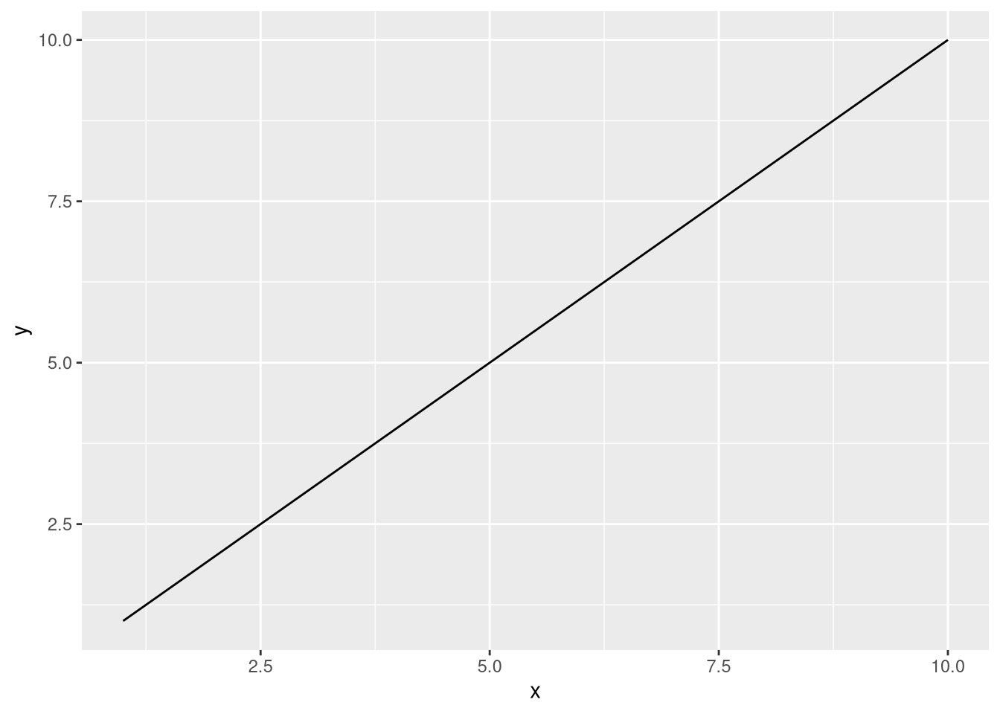
Models are only a representation and simplification of reality. Population dynamics models represent how populations grow or decline over time. They can be parameterized by fitting models to available data.
In natural resource management of renewable resources, predictions from population dynamics models often used to provide advice for near-term removals from a population. For example, in fisheries management, usually the advice provides guidance on maximal amounts that can be removed from a fish population (i.e., catch) without depressing its ability to regenerate (i.e., overfishing).
A wide variety of models and types of information can be included, but here we start with some of the most basic models. These are also often used when little detail is known about the population.
Parameterization is the process of choosing values for parameters in an equation. In a line equation:
\(y = a + bx\) ,
the intercept parameter \(a\) and the slope parameter \(b\) can be chosen to be certain values. For example, what value of \(y\) results from \(a=0\) and \(b=1\)? Any two values can be used to create a single line that yields an infinite set of \(x\) and \(y\) values along it. Plotting these yields a line:
a <- 0; b<-1; x<-1:10; y<- a + b*x
tibble(x,y) %>% ggplot(aes(x,y)) + geom_line()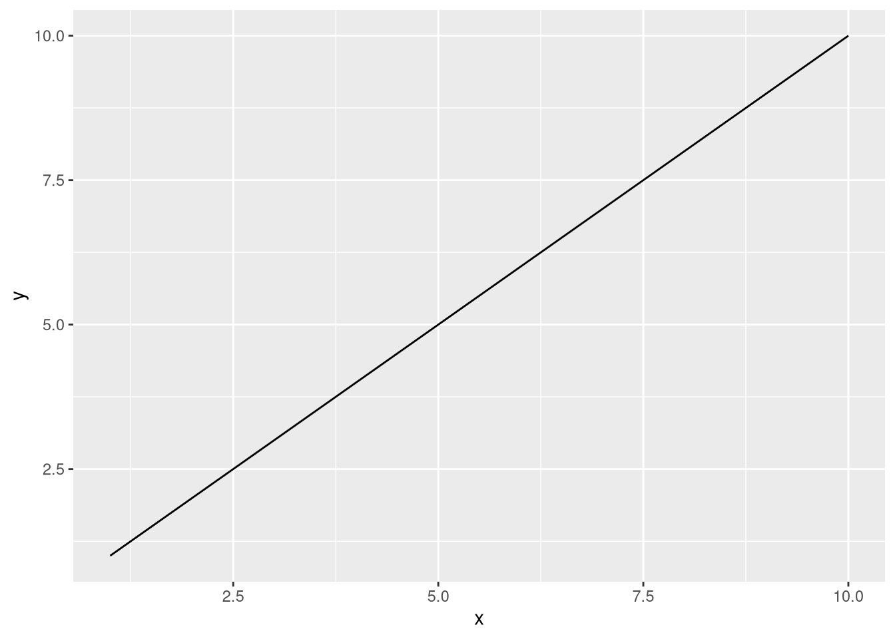
This line is an example of a mathematical model:

With a linear functional form:
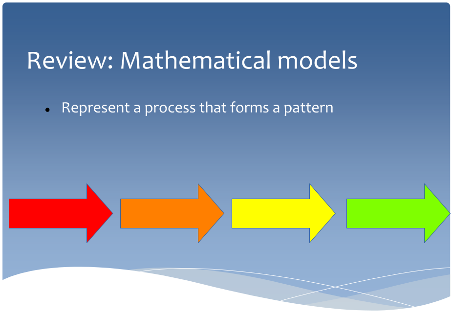
Other functional forms are possible. For example, can you find an equation that roughly represents this process?
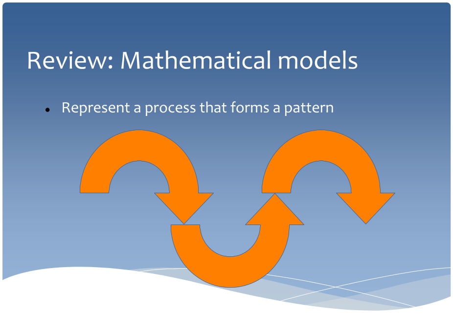
This is one option, but others exist. Polynomial models for example could replicate this shape, even though they are a class of ‘linear’ models.
x <- seq(0,3*pi,pi/10); y <- sin(x)
tibble(x,y) %>% ggplot(aes(x,y)) + geom_line()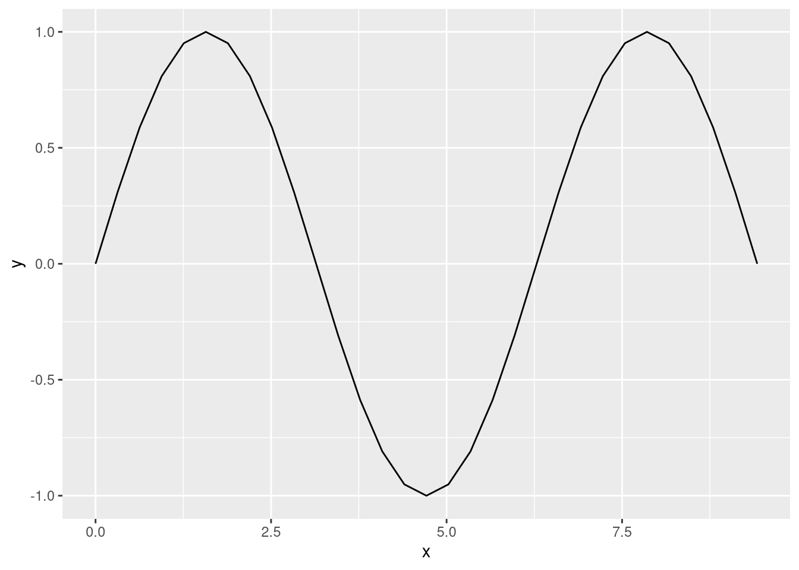
Another kind of model could describe circular processes:
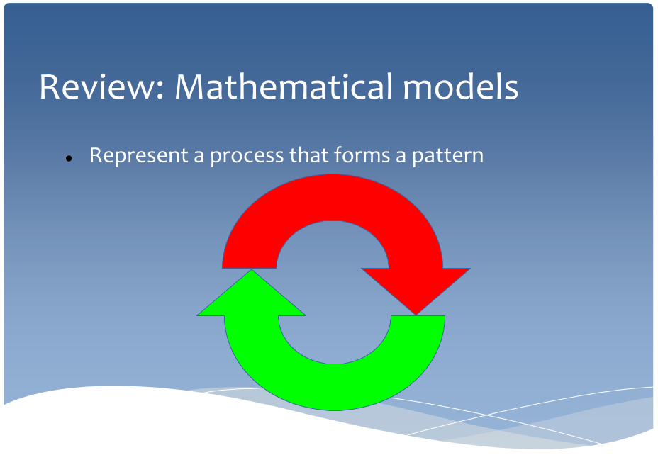
Mathematical models therefore can have a variety of forms, with specific parameterizations defining a certain model’s exact shape.
Instead of describing operational linkages, statistical models describe variation surrounding a central process described by the functional form. The generation of this variation is often itself described of as a process, but it is instead an error process describing how chance results in certain numbers more frequently than other numbers. The result of are error distributions around a central process. These are modeled in statistics using equations for various error distributions, such as a binomial, Poisson, Gaussian (normal), or lognormal distributions.

Distributions are well-used in the study of biological processes, because biological processes are notoriously imperfect and therefore partially controlled by chance. Growth for example, can be partially determined by age, but is also simply the result of variation:
age <- 6:115; pred_size <- 6:115; size <-pred_size + rnorm(110, sd = 10)
tibble(age, size, pred_size) %>% ggplot(aes(age, size)) + geom_point() + geom_line(aes(age, pred_size))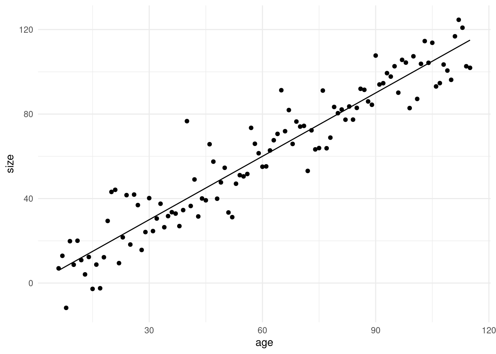
tibble(age, size, pred_size) %>% ggplot(aes(size - pred_size)) + geom_histogram()`stat_bin()` using `bins = 30`. Pick better value with `binwidth`.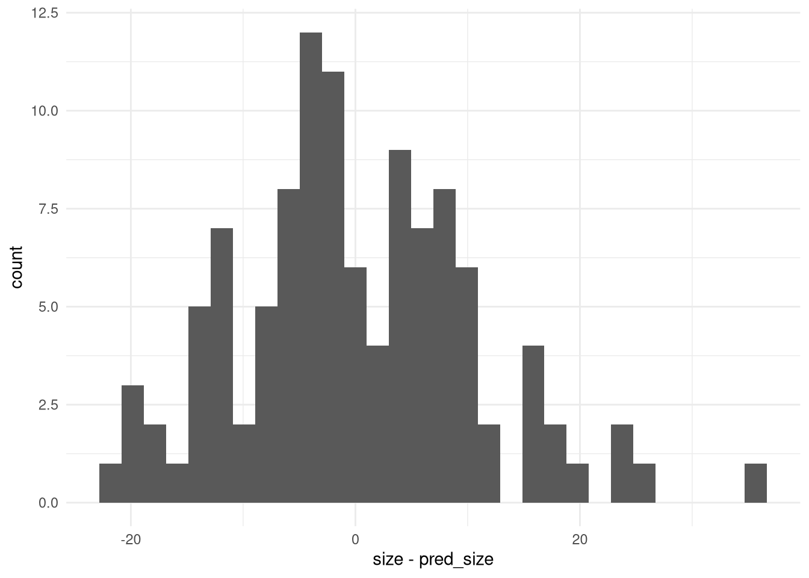
If we do not know the process behind a pattern observed in nature, how do we best describe the process using parameters, or parameterize our model?
This is done using statistical model fitting. For example:
age <- 6:115; pred_size <- 6:115; size <-pred_size + rnorm(110, sd = 10)
test.lm <- lm(size~age)
summary(test.lm)
Call:
lm(formula = size ~ age)
Residuals:
Min 1Q Median 3Q Max
-31.707 -8.035 -0.802 7.076 30.687
Coefficients:
Estimate Std. Error t value Pr(>|t|)
(Intercept) 0.6069 2.2411 0.271 0.787
age 0.9625 0.0328 29.344 <2e-16 ***
---
Signif. codes: 0 '***' 0.001 '**' 0.01 '*' 0.05 '.' 0.1 ' ' 1
Residual standard error: 10.92 on 108 degrees of freedom
Multiple R-squared: 0.8886, Adjusted R-squared: 0.8875
F-statistic: 861.1 on 1 and 108 DF, p-value: < 2.2e-16Notice that the fitting process accurately achieved our simulated parameters? How did it do that? It used a fitting algorithm to find the line that best fit all data points simultaneously. The fit is summarised as a single number in an objective function. Finding the best fit is done iteratively by flipping the sign of an equation that reflects fit to the model (i.e., taking the negative), and then following a routine to minimize the objective function. Flipping the sign is done simply because minimizing is computationally easier to handle than maximizing.
A general form for such an algorithm goes something like:
1 - Pick or jump to new values for parameters (e.g., \(a\) and \(b\) in a linear model).
2- Calculate predictions
3 - Evaluate the objection function, which is usually a statistic representing model fit (e.g., sum of squares or likelihood function)
4 - Repeat 1-3, then compare the fit to the previous value.
5 - If the fit is better, keep new parameter values. If worse, keep old values. Some algorithms add an element of chance here to avoid local minima (e.g., keep the better values only 90% of the time)
6 - Repeat until no better answer can be found (i.e., essentially the same answer is found again and again, indicating convergence)
By comparison, let’s try to do something similar by hand:
####Exercise 3 - fit linear model----###
line_f<-function(b, a = 0, x = xx){
y<-a + b*x
return(y)
}
set.seed(100)
?rnorm
rnorm(100) [1] -0.50219235 0.13153117 -0.07891709 0.88678481 0.11697127 0.31863009
[7] -0.58179068 0.71453271 -0.82525943 -0.35986213 0.08988614 0.09627446
[13] -0.20163395 0.73984050 0.12337950 -0.02931671 -0.38885425 0.51085626
[19] -0.91381419 2.31029682 -0.43808998 0.76406062 0.26196129 0.77340460
[25] -0.81437912 -0.43845057 -0.72022155 0.23094453 -1.15772946 0.24707599
[31] -0.09111356 1.75737562 -0.13792961 -0.11119350 -0.69001432 -0.22179423
[37] 0.18290768 0.41732329 1.06540233 0.97020202 -0.10162924 1.40320349
[43] -1.77677563 0.62286739 -0.52228335 1.32223096 -0.36344033 1.31906574
[49] 0.04377907 -1.87865588 -0.44706218 -1.73859795 0.17886485 1.89746570
[55] -2.27192549 0.98046414 -1.39882562 1.82487242 1.38129873 -0.83885188
[61] -0.26199577 -0.06884403 -0.37888356 2.58195893 0.12983414 -0.71302498
[67] 0.63799424 0.20169159 -0.06991695 -0.09248988 0.44890327 -1.06435567
[73] -1.16241932 1.64852175 -2.06209602 0.01274972 -1.08752835 0.27053949
[79] 1.00845187 -2.07440475 0.89682227 -0.04999577 -1.34534931 -1.93121153
[85] 0.70958158 -0.15790503 0.21636787 0.81736208 1.72717575 -0.10377029
[91] -0.55712229 1.42830143 -0.89295740 -1.15757124 -0.53029645 2.44568276
[97] -0.83249580 0.41351985 -1.17868314 -1.17403476hist(rnorm(100))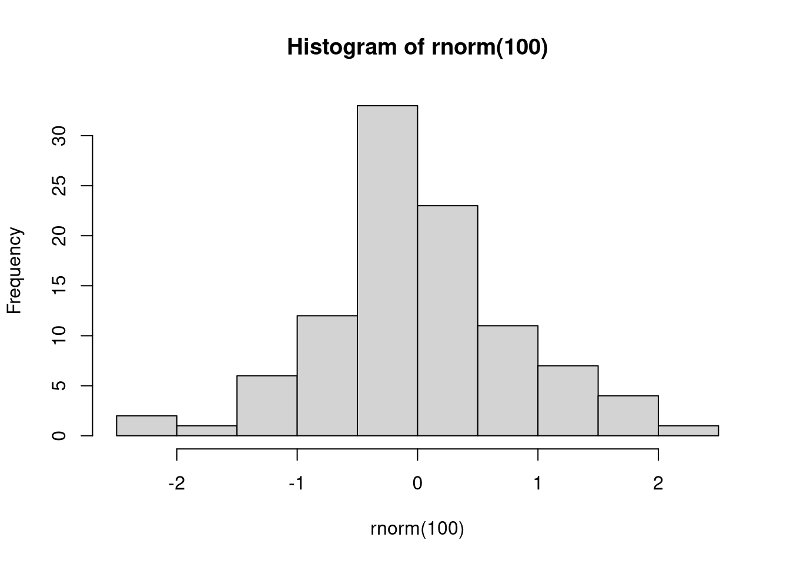
xx <- seq(0.5,3.5,0.5)
line_f(xx)[1] 0.25 1.00 2.25 4.00 6.25 9.00 12.25obs <- 0 + 2.3*xx + rnorm(length(xx))
pred<-line_f(1)
tibble(xx, obs, pred) %>% ggplot(aes(xx, obs)) + geom_point() + geom_line(aes(xx,pred))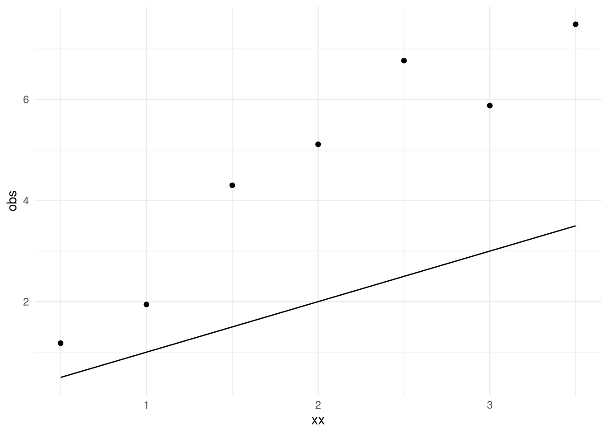
SS1<- sum((obs-pred)^2)
pred<-line_f(1.5)
SS1.5<- sum((obs-pred)^2)
pred1.5<-line_f(1.5)
pred<-line_f(2)
SS2<- sum((obs-pred)^2)
pred2<-line_f(2)
pred<-line_f(2.5)
SS2.5<- sum((obs-pred)^2)
pred2.5<-line_f(2.5)
tibble(xx, obs, pred = pred1.5) %>%
mutate(type = '1.5') %>%
bind_rows(tibble(xx, obs, pred = pred2) %>%
mutate(type='2')) %>%
bind_rows(tibble(xx, obs, pred = pred2.5) %>%
mutate(type='2.5')) %>%
group_by(type) %>%
ggplot(aes(xx, obs)) + geom_point() + geom_line(aes(xx, pred, color = type))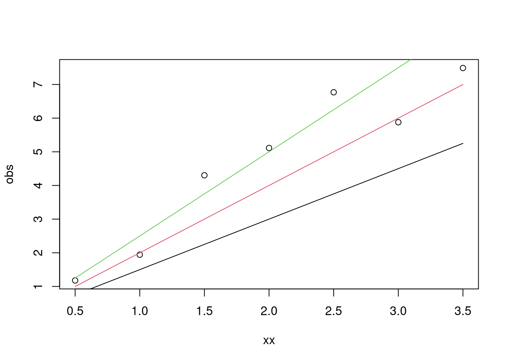
pred<-line_f( 3)
SS3<- sum((obs-pred)^2)
SS1; SS1.5; SS2; SS2.5; SS3[1] 61.30771[1] 25.07943[1] 6.351145[1] 5.122861[1] 21.39458tibble(SS = c(SS1, SS1.5, SS2, SS2.5, SS3),
slope=c(1, 1.5, 2, 2.5, 3)) %>%
ggplot(aes(slope, SS)) + geom_line()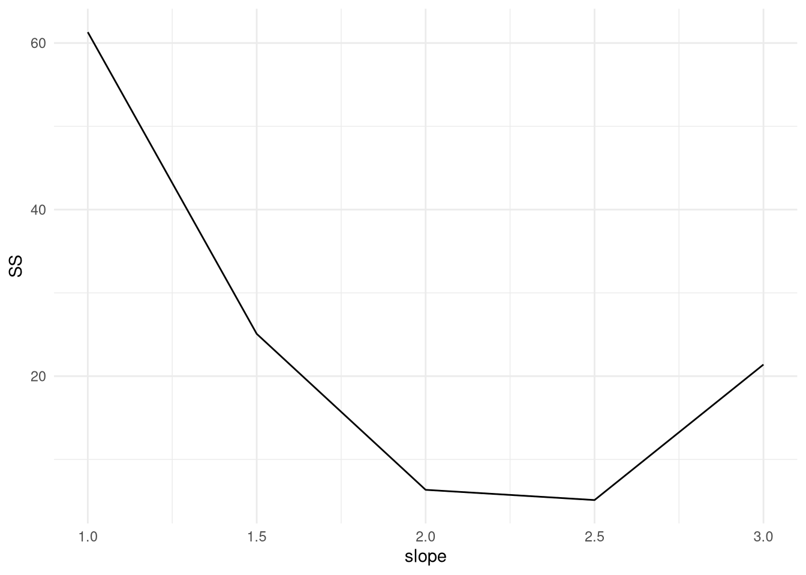
SS_f<-function(b, a = 0, obs1 = obs){
pred<-line_f(b)
SS<- sum((obs1-pred)^2)
return(SS)
}
SS_f(2.5)[1] 5.122861Finding the right answer by hand is clearly a very tedious process. There must be a better way to do this, and in fact there are many many different better ways to do this. At [this web page](https://www.r-bloggers.com/2013/04/the-golden-section-search-method-modifying-the-bisection-method-with-the-golden-ratio-for-numerical-optimization/), one rather easy-to-understand algorithm is described as an example of an efficient search method for finding the minimum. It is called the ‘Golden Section search’ and is further described in a video [here](https://www.youtube.com/watch?v=hLm8xfwWYPw).
In order to run this script, the ‘golden.section.search’ function must be saved and sourced from [here](https://chemicalstatistician.wordpress.com/2013/04/22/using-r-to-implement-the-golden-bisection-method/).
source('goldensectionsearch.r')
golden.section.search(SS_f, 1, 3, 0.00001)
Iteration # 1
f1 = 13.01273
f2 = 3.590522
f2 < f1
New Upper Bound = 3
New Lower Bound = 1.763932
New Lower Test Point = 2.236068
New Upper Test Point = 2.527864
Iteration # 2
f1 = 3.590522
f2 = 5.569206
f2 > f1
New Upper Bound = 2.527864
New Lower Bound = 1.763932
New Upper Test Point = 2.236068
New Lower Test Point = 2.055728
Iteration # 3
f1 = 5.3477
f2 = 3.590522
f2 < f1
New Upper Bound = 2.527864
New Lower Bound = 2.055728
New Lower Test Point = 2.236068
New Upper Test Point = 2.347524
Iteration # 4
f1 = 3.590522
f2 = 3.642812
f2 > f1
New Upper Bound = 2.347524
New Lower Bound = 2.055728
New Upper Test Point = 2.236068
New Lower Test Point = 2.167184
Iteration # 5
f1 = 3.992991
f2 = 3.590522
f2 < f1
New Upper Bound = 2.347524
New Lower Bound = 2.167184
New Lower Test Point = 2.236068
New Upper Test Point = 2.27864
Iteration # 6
f1 = 3.590522
f2 = 3.507856
f2 < f1
New Upper Bound = 2.347524
New Lower Bound = 2.236068
New Lower Test Point = 2.27864
New Upper Test Point = 2.304952
Iteration # 7
f1 = 3.507856
f2 = 3.5202
f2 > f1
New Upper Bound = 2.304952
New Lower Bound = 2.236068
New Upper Test Point = 2.27864
New Lower Test Point = 2.262379
Iteration # 8
f1 = 3.524456
f2 = 3.507856
f2 < f1
New Upper Bound = 2.304952
New Lower Bound = 2.262379
New Lower Test Point = 2.27864
New Upper Test Point = 2.28869
Iteration # 9
f1 = 3.507856
f2 = 3.506851
f2 < f1
New Upper Bound = 2.304952
New Lower Bound = 2.27864
New Lower Test Point = 2.28869
New Upper Test Point = 2.294902
Iteration # 10
f1 = 3.506851
f2 = 3.509765
f2 > f1
New Upper Bound = 2.294902
New Lower Bound = 2.27864
New Upper Test Point = 2.28869
New Lower Test Point = 2.284852
Iteration # 11
f1 = 3.5064
f2 = 3.506851
f2 > f1
New Upper Bound = 2.28869
New Lower Bound = 2.27864
New Upper Test Point = 2.284852
New Lower Test Point = 2.282479
Iteration # 12
f1 = 3.506637
f2 = 3.5064
f2 < f1
New Upper Bound = 2.28869
New Lower Bound = 2.282479
New Lower Test Point = 2.284852
New Upper Test Point = 2.286318
Iteration # 13
f1 = 3.5064
f2 = 3.50645
f2 > f1
New Upper Bound = 2.286318
New Lower Bound = 2.282479
New Upper Test Point = 2.284852
New Lower Test Point = 2.283945
Iteration # 14
f1 = 3.506444
f2 = 3.5064
f2 < f1
New Upper Bound = 2.286318
New Lower Bound = 2.283945
New Lower Test Point = 2.284852
New Upper Test Point = 2.285412
Iteration # 15
f1 = 3.5064
f2 = 3.506401
f2 > f1
New Upper Bound = 2.285412
New Lower Bound = 2.283945
New Upper Test Point = 2.284852
New Lower Test Point = 2.284506
Iteration # 16
f1 = 3.50641
f2 = 3.5064
f2 < f1
New Upper Bound = 2.285412
New Lower Bound = 2.284506
New Lower Test Point = 2.284852
New Upper Test Point = 2.285066
Iteration # 17
f1 = 3.5064
f2 = 3.506398
f2 < f1
New Upper Bound = 2.285412
New Lower Bound = 2.284852
New Lower Test Point = 2.285066
New Upper Test Point = 2.285198
Iteration # 18
f1 = 3.506398
f2 = 3.506398
f2 > f1
New Upper Bound = 2.285198
New Lower Bound = 2.284852
New Upper Test Point = 2.285066
New Lower Test Point = 2.284984
Iteration # 19
f1 = 3.506398
f2 = 3.506398
f2 < f1
New Upper Bound = 2.285198
New Lower Bound = 2.284984
New Lower Test Point = 2.285066
New Upper Test Point = 2.285116
Iteration # 20
f1 = 3.506398
f2 = 3.506398
f2 < f1
New Upper Bound = 2.285198
New Lower Bound = 2.285066
New Lower Test Point = 2.285116
New Upper Test Point = 2.285147
Iteration # 21
f1 = 3.506398
f2 = 3.506398
f2 > f1
New Upper Bound = 2.285147
New Lower Bound = 2.285066
New Upper Test Point = 2.285116
New Lower Test Point = 2.285097
Iteration # 22
f1 = 3.506398
f2 = 3.506398
f2 > f1
New Upper Bound = 2.285116
New Lower Bound = 2.285066
New Upper Test Point = 2.285097
New Lower Test Point = 2.285085
Iteration # 23
f1 = 3.506398
f2 = 3.506398
f2 < f1
New Upper Bound = 2.285116
New Lower Bound = 2.285085
New Lower Test Point = 2.285097
New Upper Test Point = 2.285104
Iteration # 24
f1 = 3.506398
f2 = 3.506398
f2 > f1
New Upper Bound = 2.285104
New Lower Bound = 2.285085
New Upper Test Point = 2.285097
New Lower Test Point = 2.285092
Iteration # 25
f1 = 3.506398
f2 = 3.506398
f2 > f1
New Upper Bound = 2.285097
New Lower Bound = 2.285085
New Upper Test Point = 2.285092
New Lower Test Point = 2.285089
Iteration # 26
f1 = 3.506398
f2 = 3.506398
f2 < f1
New Upper Bound = 2.285097
New Lower Bound = 2.285089
New Lower Test Point = 2.285092
New Upper Test Point = 2.285094
Final Lower Bound = 2.285089
Final Upper Bound = 2.285097
Estimated Minimizer = 2.285093 #Check out optim function
?optimAnd for more complicated problems with many parameters, there are more complex algorithms, e.g. simulated annealing.
Understanding the basics of programming, mathematical modeling, and statistical model fitting are not only the basis to stock assessment, but also yields other transferable skills.
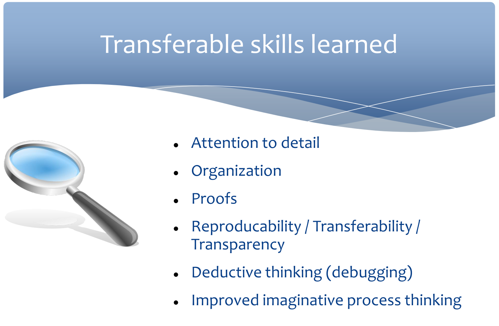
This process can be frustrating as you learn debugging, or quickly learning how to find your own mistakes. Some things to remember as you get better at this:
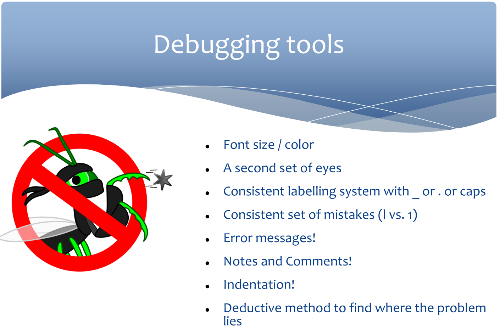
This text, pictures, and figures came with the Quarto package. Can you fit linear models to each of the three groups of penguins and add the lines to the plots?

The penguins data from the palmerpenguins package contains size measurements for 344 penguins from three species observed on three islands in the Palmer Archipelago, Antarctica.
The plot below shows the relationship between flipper and bill lengths of these penguins.
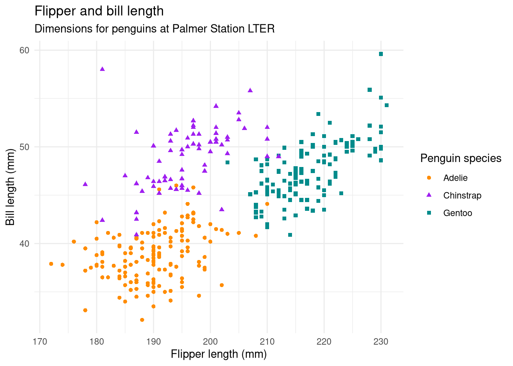